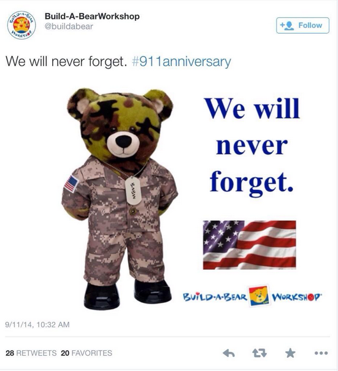

1. Who is the specific audience?
2. What are the inferences/underlying messages the creators want the audience to take away?
3. What biases do the creators have?
4. How are the creators using the visuals, ethos, pathos, and logos to support their argument?
5. What social issues might relate?
6. Do you find the tweet effective?